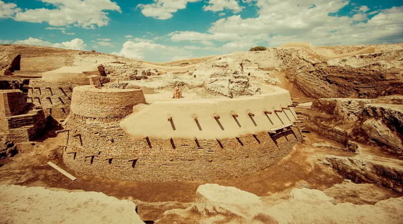
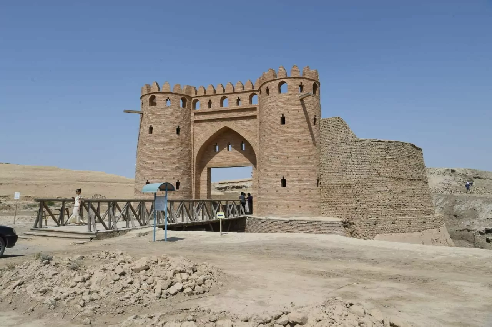

The Ancient City of Otyrar – A Center of Medieval Civilization
Otyrar is one of Kazakhstan's most significant historical cities, once situated on the Silk Road. It was a major political, economic, and cultural center. The great philosopher Al-Farabi was born here.
- Founded: 2nd century BC
- Role: Trade and scholarly hub
- Famous for: Birthplace of Al-Farabi
- Archaeology: Ongoing excavations
What to See?
- 🛠Ruins of the ancient city
- 🗿 Archaeological discoveries
- 🺠Museum pavilion at the excavation site
How to Get There?
📠Turkistan Region, 50 km from Turkistan
🚗 By car or taxi from Turkistan
Useful Information
ⰠOpening hours: 09:00 – 18:00
🎟️ Entrance fee: 500 KZT (adults), 200 KZT (children)
Otyrar is a living testimony to the rich history and culture of Kazakhstan. A great destination for educational tourism!
PHOTOS


